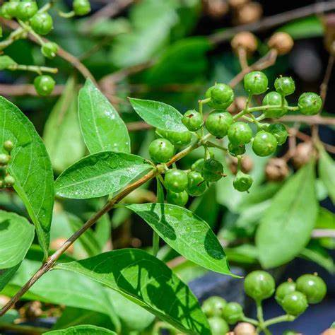

Basonym of Drug
Madayantika
Botanical Name
Lawsonia inermis Linn.
Family
Lythraceae (Madayantika kula)
Vernacular Names
- Hindi: Mehandi
- English: Henna, Mignonette tree
- Bengali: Mehedi
- Kannada: Manjha
- Malayalam: Mailanchi
- Telugu: Gorintaka
- Tamil: Aivanam
Sanskrit Synonyms
- Madayanti
- Mallika
- Modayani
- Sugandapushpa
- Ragagarbha
- Nakharanjaka
Properties
- Rasa (Taste): Tikta (Bitter), Kashaya (Astringent)
- Guna (Qualities): Laghu (Light to digest), Ruksha (Dry)
- Vipaka: Katu (Undergoes pungent taste after digestion)
- Veerya (Potency): Sheeta (Cold)
Effect on Tridosha
Kapha Pitta hara (Reduces vitiated Kapha and Pitta dosha), Kandughna (Reduces itching sensation)
Pharmacological Action
- Diuretic
- Emetic
- Expectorant
- Styptic
- Haematenic
- Liver tonic
Useful Parts
Dosage
- Fresh juice: 5-10 ml
- Seed powder: 1-3 g
Morphology
Branched shrub with lateral branches ending with spines. Leaves are simple, opposite, entire, lanceolate with very short or absent petioles. Inflorescence is a large, pyramidal panicled cyme. Flowers are white or rose-colored. Fruits are globose capsules with numerous seeds.
Chemical Constituents
The leaves contain lawsone, coumarins, flavonoids, luteolin and its 7-O-glucoside, beta sitosterol-3-O-glucoside. Tannin is found in all parts of the plant. The plant also contains gallic acid, glucose, mannitol, and mucilage.
Uses of Madayantika
- The paste of the leaves is applied for headache, burning sensation of extremities, and joint pain.
- Paste is used for localized swelling, tenderness, and pain relief.
- Gargling with decoction for throat and oral cavity pain relief.
- Cold infusion of fruits is given to treat insomnia.
- Decoction of flowers is used as a memory booster.
- Seed powder or paste is used for diarrhea and irritable bowel syndrome.
Indications and Usage
- Kushta: Skin diseases
- Jwara: Fever
- Kandu: Itching, pruritus
- Daha: Burning sensation (e.g., gastritis, neuropathy, burning sensation in eyes)
- Raktapitta: Bleeding disorders (e.g., nasal bleeding, heavy periods)
- Kamala: Jaundice, liver diseases
- Raktatisara: Ulcerative colitis
- Hrudroga: Cardiac disorders
- Mutrakruchra: Dysuria
- Bhrama: Delusion, dizziness
- Vrana: Ulcers, wounds
Ayurvedic Formulations
Maha panchagavya Ghrita: An Ayurvedic medicine in ghee form, used in the treatment of Apasmara (Epilepsy), Unmada (Insanity), Arshas (Piles), Pandu (Anemia), and in Snehana (oleation) karma before Panchakarma procedures like Vamana and Virechana.